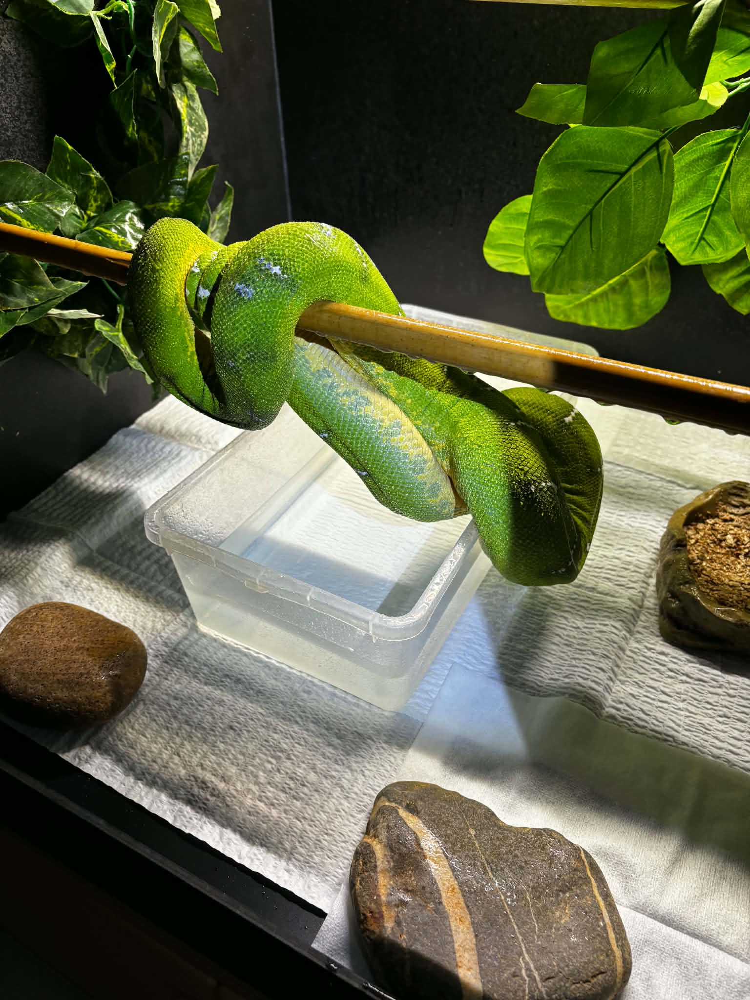
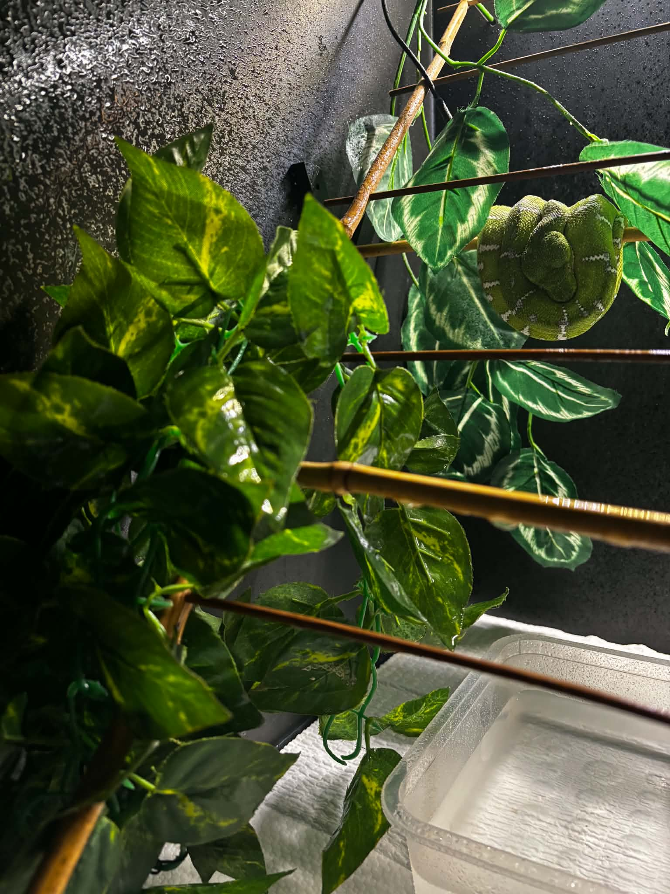

NAJWAŻNIEJSZY WNIOSEK
Wilgotności u Corallus caninus nie da się uczciwie sprowadzić do jednego procentu utrzymywanego przez 24 godziny na dobę i 365 dni w roku. W naturze zmieniają się opady, temperatura, ruch powietrza i dostępność mokrych powierzchni. W terrarium te elementy również muszą być oceniane razem.
Nie odtwarzamy jednej liczby z lasu. Odtwarzamy funkcjonujący mikroklimat.
W praktyce oznacza to roczny cykl obejmujący fazy suchsze, przejściowe i wilgotniejsze oraz krótszy cykl dobowy: zwilżenie powierzchni, wzrost wilgotności, wymiana powietrza i stopniowe przesychanie. Zwierzę nie powinno być celowo odwadniane, ale nie powinno też przez cały czas leżeć na mokrej żerdzi w stojącym powietrzu.
GRANICA, KTÓREJ NIE PRZEKRACZAMY
Corallus caninus to nie Corallus batesii
Wiele starszych publikacji i internetowych poradników używa nazwy „Emerald Tree Boa” dla dwóch form traktowanych dawniej jako jeden gatunek. W 2009 roku Henderson, Passos i Feitosa przywrócili nazwę Corallus batesii dla populacji Amazon Basin, oddzielając je od C. caninus z Guiana Shield i północnej części zasięgu.
Materiały Stana Chirasa i współczesnych hodowców Basinów wykorzystujemy wyłącznie do porównania filozofii husbandry: cykliczności, wentylacji, świeżej wody i sposobu obserwacji. Nie kopiujemy z nich docelowego RH ani harmonogramu zraszania.
To rozróżnienie ma jeszcze jeden skutek: publikacje sprzed 2009 roku mogą opisywać „C. caninus”, a równocześnie łączyć dane lub doświadczenia z obu dzisiejszych gatunków. Każdą liczbę trzeba więc czytać razem z datą, lokalizacją zwierząt i konstrukcją terrarium.
ŚRODOWISKO NATURALNE
Las deszczowy nie ma jednego ustawienia
Dane klimatyczne z Gujany pokazują realną sezonowość opadów, ale również duże różnice regionalne. W północnej części kraju zwykle występują dwie pory wilgotniejsze i dwa okresy suchsze. Na południu, w rejonie Rupununi, roczny rytm jest częściej jednomodalny: jedna główna pora mokra i dłuższa część suchsza. Zasięg gatunku jest szerszy niż jeden punkt na mapie, więc nie istnieje uniwersalny kalendarz miesięczny dla każdego C. caninus.
Równie ważny jest mikroklimat. Inne warunki panują nad wodą pod gęstym okapem, inne na skraju lasu, a jeszcze inne kilka metrów nad ziemią w miejscu z większym ruchem powietrza. Jednorazowy pomiar terenowy opisuje konkretną chwilę i miejsce — nie całoroczny cel hodowlany.
UWAGA O DANYCH RIETHAUSENA
Dwa odczyty na tej samej stronie autora
Na stronie o utrzymaniu Jörg Riethausen wspomina, że w dniu terenowego spotkania w marcu wilgotność wynosiła poniżej 50% RH. Szczegółowy raport z wyprawy podaje natomiast około 75% RH przy znalezionym zwierzęciu. Autor nie wyjaśnia, czy pomiary wykonano o innej porze lub w innym punkcie. Nie wybieramy wygodniejszej liczby: traktujemy oba zapisy jako ilustrację ograniczeń pojedynczego pomiaru, a nie jako cel dla terrarium.

ROCZNY RYTM
Trzy fazy zamiast 365 identycznych dni
Poniższy model nie jest gotowym kalendarzem hodowlanym. To bezpieczna rama do myślenia o zmianie częstotliwości i intensywności bodźców. Konkretne ustawienia zależą od pochodzenia zwierzęcia, wieku, kondycji, wentylacji, temperatury pokoju, wymiarów zbiornika i wydajności instalacji.
Pora suchsza
Mniej lub krótsze epizody „deszczu”, dłuższy czas pomiędzy nimi i wyraźne przesychanie powierzchni. Suchsza nie znaczy sucha: świeża woda pozostaje stale dostępna, a zwierzę nie może wykazywać oznak odwodnienia.
Cel funkcjonalnyWydłużyć fazę suchych powierzchni, nie wysuszyć zwierzę.
Okres przejściowy
Zmiany wprowadzane stopniowo przez kolejne tygodnie. Częstotliwość lub długość zraszania rośnie albo maleje etapami, a hodowca obserwuje tempo wysychania oraz reakcję konkretnego osobnika.
Cel funkcjonalnyZmienić rytm bez nagłego przestawienia całego systemu.
Pora wilgotniejsza
Więcej epizodów zraszania lub większa ilość wody w jednym epizodzie. Wentylacja działa cały czas, odpływ nie dopuszcza do zalewania zbiornika, a żerdzie i ciało węża nadal mają możliwość wyschnąć.
Cel funkcjonalnyZwiększyć dostępność wody i siłę bodźca, nie tworzyć bagna.
Świadome cyklowanie rozrodcze dotyczy wyłącznie zdrowych, dojrzałych i dobrze ustabilizowanych zwierząt. Zmiany wody, temperatury, światła i karmienia oddziałują razem; nie należy gwałtownie zmieniać wszystkich parametrów jednocześnie.
KRÓTKI CYKL
Co powinno wydarzyć się w ciągu jednej doby
Pora roku zmienia skalę zraszania, ale nie usuwa cyklu mokro–sucho. Dobę warto oceniać jako sekwencję zjawisk, a nie pojedynczy odczyt higrometru.
- 01Epizod zraszania
Woda trafia na wybrane powierzchnie, podłoże lub roślinność. Pojawiają się krople, z których część zwierząt może pić.
- 02Wzrost wilgotności
Parowanie podnosi RH. Ten sam odczyt ma inne znaczenie przy innej temperaturze, dlatego oba parametry trzeba rejestrować razem.
- 03Wymiana powietrza
Wentylacja usuwa nadmiar wilgoci i ogranicza zastój. Nie chodzi o silny nawiew na węża, lecz o stałą, łagodną wymianę.
- 04Przesychanie powierzchni
Żerdzie, szyby i ciało zwierzęcia przestają być mokre przed kolejnym cyklem. Głębsze warstwy odpowiedniego podłoża mogą nadal stabilizować wilgotność.
ELEMENT KRYTYCZNY
Wilgotność bez wentylacji jest innym środowiskiem
W tym punkcie źródła są wyjątkowo zgodne. Riethausen ostrzega przed połączeniem wysokiej temperatury, wysokiej wilgotności i małej wymiany powietrza. Joseph M. Polanco określa ciągłą cyrkulację jako jeden z podstawowych elementów środowiska. Amerykańskie materiały hodowlane również oddzielają wilgotne powietrze od zastoju i permanentnie mokrych powierzchni.
Wilgotne powietrze
Kontrolowany wzrost RH, łagodna wymiana powietrza, suchnące żerdzie i brak utrzymującej się kondensacji na całym szkle.
Stale mokry zbiornik
Mokre ciało i żerdzie przez większość doby, kwaśniejące podłoże, zastój, biofilm w wodzie i brak miejsca o suchszych powierzchniach.
Tempo przesychania jest praktycznym parametrem równie ważnym jak szczyt RH. Jeśli po zraszaniu wnętrze długo nie odzyskuje suchych powierzchni, najpierw trzeba ocenić wentylację, ilość podawanej wody, odpływ, temperaturę i wilgotność całego pomieszczenia — zamiast bezrefleksyjnie dodawać kolejny cykl.
WODA DLA ZWIERZĘCIA
Nawodnienie to nie to samo co wysoki odczyt RH
Wilgotność powietrza wspiera bilans wodny i prawidłowe linienie, ale nie zastępuje dostępu do czystej wody. Miska powinna być stale dostępna, stabilnie ustawiona i regularnie czyszczona. Jej położenie trzeba dobrać tak, aby zwierzę mogło z niej korzystać, a hodowca mógł ją łatwo kontrolować.
Zraszanie może tworzyć krople na liściach, ściankach i żerdziach, co u części osobników uruchamia picie. Nie należy jednak zakładać, że samo „wysokie RH” oznacza dobre nawodnienie. Warto obserwować realne picie, jakość wylinek, wygląd skóry, masę ciała, wydalanie i zachowanie.
KONFRONTACJA ŹRÓDEŁ
Dlaczego doświadczeni hodowcy podają różne wartości
Rozbieżności nie powinny być ukrywane. Pokazują, że wynik zależy od całego systemu: kubatury, wentylacji, temperatury, podłoża, wilgotności pokoju i sposobu podawania wody. Tabela przedstawia to, co rzeczywiście mówią źródła — oraz granicę, której nie należy przekraczać przy interpretacji.
| Źródło | Opisana praktyka | Co można wyciągnąć | Czego nie przenosimy |
|---|---|---|---|
| Jörg Riethausen Niemcy; C. caninus i C. batesii |
Deklaruje zwykle 45–70% RH, ręczne zwilżanie podłoża co najmniej raz dziennie oraz automatyczne deszczowanie dla dłuższych faz lub nieobecności. Niechętnie zrasza zwierzę bezpośrednio. | Znaczenie suchszych faz, mikroklimatu, higieny i wymiany powietrza. | Zakresu 45–70% jako uniwersalnego celu dla każdego zbiornika i osobnika. |
| Joseph M. Polanco USA; publikacja z 2006 r. |
Podkreśla umiarkowane ciepło, wysoką wilgotność i ciągłą cyrkulację. W swojej instalacji opisywał 65–75% RH w dzień i 45–55% w nocy jako wartości ograniczające rozwój pleśni. | Wilgotność musi być projektowana razem z wentylacją i higieną. | Historycznych liczb jako standardu gatunkowego: tekst powstał przed rozdzieleniem C. batesii. |
| Stan Chiras USA; tekst z 1998 r., Amazon Basin |
Opisywał cykl dobowy i znacznie mocniejszy „deszcz” w sezonie rozrodczym; materiał dotyczy przede wszystkim formy Amazon Basin, dziś C. batesii. | Zmienność w skali doby i roku oraz potrzebę ruchu powietrza. | Jego parametrów RH i długich sesji zraszania do C. caninus. |
| Współczesny hodowca Basinów USA; C. batesii |
Opisuje stabilne 60–65% RH, bardzo rzadkie zraszanie i duży nacisk na świeżą wodę. | Skuteczne systemy mogą osiągać nawodnienie różnymi drogami. | Całego protokołu — to inny gatunek i inna instalacja. |
| ReptiFiles + Zion McAndrews współczesny poradnik C. caninus |
Podaje wyższy zakres 75–90% RH, ale równocześnie wymaga dobrej wentylacji, wysychania między zraszaniami i stałego dostępu do świeżej wody. | Nawet przy wyższych odczytach powierzchnie nie powinny pozostawać stale mokre. | Samego procentu bez sprawdzenia miejsca pomiaru, temperatury i tempa wysychania. |
WSPÓLNY MIANOWNIK
- stała dostępność świeżej wody;
- brak permanentnie mokrego zwierzęcia i żerdzi;
- sprawna, łagodna wymiana powietrza;
- analiza temperatury i RH łącznie;
- obserwacja reakcji konkretnego osobnika;
- stopniowe, nie gwałtowne zmiany sezonowe.

PRAKTYKA HODOWLANA
Jak zbudować własny program bez zgadywania
Najpierw stabilizujemy terrarium, dopiero potem zmieniamy sezon. Program warto budować od pomiaru tego, co naprawdę dzieje się po zraszaniu, zamiast kopiować czas pracy dysz z cudzego zbiornika.
- Zmierz punkt życia zwierzęcia.Umieść czujnik przy głównej żerdzi oraz drugi w innej strefie. Zapisuj temperaturę i RH równocześnie.
- Sprawdź krzywą po zraszaniu.Zanotuj szczyt, czas spadku oraz moment, w którym żerdzie i szyby są ponownie suche.
- Oceń przepływ powietrza.Brak zastoju bez kierowania mocnego nawiewu bezpośrednio na zwierzę.
- Potwierdź nawodnienie.Kontroluj świeżość wody, obserwowane picie, masę ciała, wydalanie i jakość wylinek.
- Zmieniaj tylko jeden wymiar naraz.Najpierw częstotliwość albo długość zraszania; następnie obserwacja. To pozwala zrozumieć reakcję systemu.
- Przechodź między fazami stopniowo.Okres przejściowy licz w tygodniach, nie w jednym przełączeniu automatyki.
Nieprawidłowe linienie, utrzymujące się odwodnienie, zmiany skórne, nietypowe moczenie się, oddychanie z otwartym pyskiem, świsty lub wydzielina wymagają korekty środowiska i konsultacji z lekarzem weterynarii zajmującym się gadami. Ta publikacja jest materiałem edukacyjnym, nie diagnozą.
PODSUMOWANIE
Pora suchsza nie oznacza suszy. Pora deszczowa nie oznacza bagna.
Najlepszy wniosek z porównania Riethausena, publikacji Polanco i praktyki amerykańskich hodowców nie brzmi „ustaw X%”. Brzmi: buduj cykl, pilnuj wentylacji, zapewnij świeżą wodę, pozwalaj powierzchniom wysychać i oceniaj cały system w odniesieniu do konkretnego Corallus caninus.
PEŁNY PROFIL GATUNKU →ŹRÓDŁA I METODA
Na czym oparto ten wpis
Źródła zostały ponownie sprawdzone 15 sierpnia 2026 r. Rozbieżności zachowano i opisano zamiast tworzyć sztuczną średnią. Parametry dotyczące C. batesii pokazano wyłącznie jako porównanie metody prowadzenia.
- Jörg Riethausen — Haltung / Luftfeuchte — praktyka hodowlana, zraszanie, wentylacja i deklarowany zakres RH.
- Jörg Riethausen — Expedition Guyana, marzec 2020 — terenowa obserwacja C. caninus i parametry przy miejscu znalezienia.
- Joseph M. Polanco — Emerald Gems, Part I oraz Part II, Iguana 13, 2006 — środowisko, cyrkulacja powietrza i praktyka wilgotności.
- Stan Chiras — Identification and Husbandry of Amazon Basin Emerald Tree Boas, Reptiles Magazine, 1998 — cykle dobowe i sezonowe; materiał traktowany jako dotyczący dzisiejszego C. batesii.
- Amazon Basin Emerald Tree Boa — Husbandry — współczesna praktyka hodowcy C. batesii; wyłącznie materiał porównawczy.
- ReptiFiles — Northern Emerald Tree Boa Care Sheet — współczesne zalecenia przygotowane we współpracy z Zionem McAndrewsem.
- Henderson, Passos & Feitosa — Geographic Variation in the Emerald Treeboa, Copeia 2009: 572–582 — podstawa rozdzielenia C. batesii i C. caninus.
- FAO — Guyana: climate and rainfall seasonality oraz Guyana Civil Defence Commission — Drought — regionalny rytm opadów i jego zmienność.
Opracowanie i fotografie: Gonzo Exotics • ostatnia weryfikacja: 15.08.2026